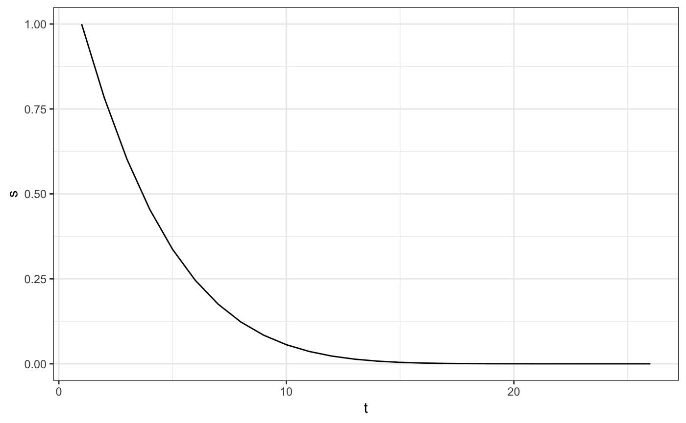

Using MOSS to analyze survival data and estimate survival curve falls into the following steps:
initial_sl_fit)MOSS_hazard)compute_simultaneous_ci)You will need a matrix of baseline covariates W, a binary treatment A, \(\widetilde T \triangleq \min(T_A, C_A)\) is the last measurement time of the subject, and \(\Delta \triangleq I(T_A \leqslant C_A)\) is the censoring indicator.
library(simcausal)
D <- DAG.empty()
D <- D +
node("W1", distr = "rbinom", size = 1, prob = .5) +
node("W", distr = "runif", min = 0, max = 1.5) +
node("A", distr = "rbinom", size = 1, prob = .15 + .5 * as.numeric(W > .75)) +
node("Trexp", distr = "rexp", rate = 1 + .7 * W^2 - .8 * A) +
node("Cweib", distr = "rweibull", shape = 1 + .5 * W, scale = 75) +
node("T", distr = "rconst", const = round(Trexp * 2)) +
node("C", distr = "rconst", const = round(Cweib * 2)) +
# Observed random variable (follow-up time):
node("T.tilde", distr = "rconst", const = ifelse(T <= C, T, C)) +
# Observed random variable (censoring indicator, 1 - failure event, 0 - censored):
node("Delta", distr = "rconst", const = ifelse(T <= C, 1, 0))
setD <- set.DAG(D)## ...automatically assigning order attribute to some nodes...## node W1, order:1## node W, order:2## node A, order:3## node Trexp, order:4## node Cweib, order:5## node T, order:6## node C, order:7## node T.tilde, order:8## node Delta, order:9## as.numeric(W > 0.75)## simulating observed dataset from the DAG object## as.numeric(W > 0.75)# only grab ID, W's, A, T.tilde, Delta
Wname <- grep("W", colnames(dat), value = TRUE)
df <- dat[, c("ID", Wname, "A", "T.tilde", "Delta")]
# The simulator will generate death at time 0.
# our package only allow positive integer time, so I add one to all times
df$T.tilde <- df$T.tilde + 1Here I simulate a survival data using simcausal package. The baseline covariate
initial_sl_fit)The following three can take a vector of strings in the following sets: https://github.com/ecpolley/SuperLearner/tree/master/R
## Loading required package: SuperLearner## Loading required package: nnls## Super Learner## Version: 2.0-24## Package created on 2018-08-10## Loading required package: survtmle## survtmle: Targeted Learning for Survival Analysis## Version: 1.1.1## Loading required package: R6## Loading required package: Rsolnp## MOSS v1.1.2: Model One-Step Survivalsl_lib_g <- c("SL.mean", "SL.glm")
sl_lib_censor <- c("SL.mean", "SL.glm")
sl_lib_failure <- c("SL.mean", "SL.glm", "SL.step.forward")
sl_fit <- initial_sl_fit(
T_tilde = df$T.tilde,
Delta = df$Delta,
A = df$A,
W = data.frame(df[, c("W", "W1")]),
t_max = max(df$T.tilde),
sl_treatment = sl_lib_g,
sl_censoring = sl_lib_censor,
sl_failure = sl_lib_failure
)## Warning: glm.fit: fitted probabilities numerically 0 or 1 occurred
## Warning: glm.fit: fitted probabilities numerically 0 or 1 occurred
## Warning: glm.fit: fitted probabilities numerically 0 or 1 occurred
## Warning: glm.fit: fitted probabilities numerically 0 or 1 occurred## Warning: glm.fit: algorithm did not converge## Warning: glm.fit: fitted probabilities numerically 0 or 1 occurred
## Warning: glm.fit: fitted probabilities numerically 0 or 1 occurred
## Warning: glm.fit: fitted probabilities numerically 0 or 1 occurred
## Warning: glm.fit: fitted probabilities numerically 0 or 1 occurred## Warning: glm.fit: algorithm did not converge## Warning: glm.fit: fitted probabilities numerically 0 or 1 occurred
## Warning: glm.fit: fitted probabilities numerically 0 or 1 occurred## [1] "density_failure_1" "density_failure_0" "density_censor_1"
## [4] "density_censor_0" "g1W"the sl_fit will contain the fitted conditional densities for the failure events (density_failure_1 for treatment group, density_failure_0 for control group), censoring events (density_censor_1 for treatment, density_censor_0 for control), and propensity scores (a vector g1W)
## <survival_curve>
## Public:
## ci: function (A, T_tilde, Delta, density_failure, density_censor,
## clone: function (deep = FALSE)
## create_ggplot_df: function (W = NULL)
## display: function (type, W = NULL)
## hazard: 0.199703701220824 0.125904830558054 0.218395423085572 0. ...
## hazard_to_pdf: function ()
## hazard_to_survival: function ()
## initialize: function (t, hazard = NULL, survival = NULL, pdf = NULL)
## n: function ()
## pdf: NULL
## pdf_to_hazard: function ()
## pdf_to_survival: function ()
## survival: 1 1 1 1 1 1 1 1 1 1 1 1 1 1 1 1 1 1 1 1 1 1 1 1 1 1 1 1 ...
## survival_to_hazard: function ()
## survival_to_pdf: function ()
## t: 1 2 3 4 5 6 7 8 9 10 11 12 13 14 15 16 17 18## <survival_curve>
## Public:
## ci: function (A, T_tilde, Delta, density_failure, density_censor,
## clone: function (deep = FALSE)
## create_ggplot_df: function (W = NULL)
## display: function (type, W = NULL)
## hazard: 0.395114660553201 0.265475697959529 0.423572961578287 0. ...
## hazard_to_pdf: function ()
## hazard_to_survival: function ()
## initialize: function (t, hazard = NULL, survival = NULL, pdf = NULL)
## n: function ()
## pdf: NULL
## pdf_to_hazard: function ()
## pdf_to_survival: function ()
## survival: 1 1 1 1 1 1 1 1 1 1 1 1 1 1 1 1 1 1 1 1 1 1 1 1 1 1 1 1 ...
## survival_to_hazard: function ()
## survival_to_pdf: function ()
## t: 1 2 3 4 5 6 7 8 9 10 11 12 13 14 15 16 17 18# a quick hack in case there is no data where T_tilde = 1 (time start from 1)
k_grid <- 1:max(df$T.tilde)
sl_fit$density_failure_1$t <- k_grid
sl_fit$density_failure_0$t <- k_gridWe need to call hazard_to_survival method to always do a tranformation from conditional hazard to conditional survival probabilities (one-to-one transformation).
MOSS_hazard)First we set the inputs - T_tilde: same as before - Delta: same as before - A: same as before - density_failure: use sl_fit$density_failure_1 if you want to estimate treatment group survival curve; use sl_fit$density_failure_0 for control group - density_censor: use sl_fit$density_censor_1 or sl_fit$density_censor_0 - g1W: use sl_fit$g1W - A_intervene: set 1 if you want to estimate treatment group survival curve; set 0 for control group - k_grid: 1:max(T_tilde)
moss_hazard_fit <- MOSS_hazard$new(
A = df$A,
T_tilde = df$T.tilde,
Delta = df$Delta,
density_failure = sl_fit$density_failure_1,
density_censor = sl_fit$density_censor_1,
g1W = sl_fit$g1W,
A_intervene = 1,
k_grid = k_grid
)Perform TMLE step.
psi_moss_hazard_1 <- moss_hazard_fit$iterate_onestep(
epsilon = 1e-2, max_num_interation = 1e1, verbose = FALSE
)TIPS: - set epsilon smaller if the stopping criteria fluctuation is noisy; should smoothly decrease
moss_hazard_fit_1 <- survival_curve$new(t = k_grid, survival = psi_moss_hazard_1)
moss_hazard_fit_1$display(type = 'survival') You don’t have to, but this wraps the estimated survival curve psi_moss_hazard_1 nicely with its corresponding time.
compute_simultaneous_ci)use the following script to compute the standard error for each t on the survival curve.
survival_curve_estimate <- as.vector(moss_hazard_fit_1$survival)
eic_fit <- eic$new(
A = df$A,
T_tilde = df$T.tilde,
Delta = df$Delta,density_failure = moss_hazard_fit$density_failure,
density_censor = moss_hazard_fit$density_censor,
g1W = moss_hazard_fit$g1W,
psi = survival_curve_estimate,
A_intervene = 1
)
eic_matrix <- eic_fit$all_t(k_grid = k_grid)
std_err <- compute_simultaneous_ci(eic_matrix)
upper_bound <- survival_curve_estimate + 1.96 * std_err
lower_bound <- survival_curve_estimate - 1.96 * std_err
print(survival_curve_estimate)## [1] 1.000000000 0.759534580 0.578538759 0.442252071 0.339150080
## [6] 0.260634211 0.200415169 0.153966416 0.117996035 0.090075380
## [11] 0.068375245 0.051522908 0.038473439 0.028420183 0.020722055
## [16] 0.014872758 0.010471971 0.007196804## [1] 1.21093040 1.02213758 0.86141815 0.73437725 0.63304440 0.56288957
## [7] 0.48567598 0.41933498 0.37507419 0.33966484 0.30620970 0.25458542
## [13] 0.24082662 0.23093616 0.21576933 0.21114509 0.18357222 0.03137034## [1] 0.78906960 0.49693158 0.29565937 0.15012689 0.04525576
## [6] -0.04162114 -0.08484565 -0.11140215 -0.13908212 -0.15951408
## [11] -0.16945921 -0.15153960 -0.16387974 -0.17409579 -0.17432522
## [16] -0.18139957 -0.16262828 -0.01697673## R version 3.5.3 (2019-03-11)
## Platform: x86_64-apple-darwin15.6.0 (64-bit)
## Running under: macOS Mojave 10.14.4
##
## Matrix products: default
## BLAS: /Library/Frameworks/R.framework/Versions/3.5/Resources/lib/libRblas.0.dylib
## LAPACK: /Library/Frameworks/R.framework/Versions/3.5/Resources/lib/libRlapack.dylib
##
## locale:
## [1] en_US.UTF-8/en_US.UTF-8/en_US.UTF-8/C/en_US.UTF-8/en_US.UTF-8
##
## attached base packages:
## [1] stats graphics grDevices utils datasets methods base
##
## other attached packages:
## [1] ggplot2_3.1.1 MOSS_1.1.2 Rsolnp_1.16
## [4] R6_2.4.0 survtmle_1.1.1 SuperLearner_2.0-24
## [7] nnls_1.4 simcausal_0.5.5
##
## loaded via a namespace (and not attached):
## [1] Rcpp_1.0.1 plyr_1.8.4 compiler_3.5.3
## [4] pillar_1.3.1 tools_3.5.3 digest_0.6.18
## [7] gtable_0.3.0 evaluate_0.13 memoise_1.1.0
## [10] tibble_2.1.1 lattice_0.20-38 pkgconfig_2.0.2
## [13] rlang_0.3.4 Matrix_1.2-17 igraph_1.2.4
## [16] ggsci_2.9 commonmark_1.7 parallel_3.5.3
## [19] yaml_2.2.0 speedglm_0.3-2 pkgdown_1.3.0
## [22] xfun_0.6 withr_2.1.2 stringr_1.4.0
## [25] dplyr_0.8.0.1 roxygen2_6.1.1 xml2_1.2.0
## [28] knitr_1.22 desc_1.2.0 fs_1.2.7
## [31] rprojroot_1.3-2 grid_3.5.3 tidyselect_0.2.5
## [34] glue_1.3.1 data.table_1.12.2 rmarkdown_1.12
## [37] tidyr_0.8.3 purrr_0.3.2 magrittr_1.5
## [40] scales_1.0.0 backports_1.1.4 htmltools_0.3.6
## [43] MASS_7.3-51.4 assertthat_0.2.1 colorspace_1.4-1
## [46] labeling_0.3 stringi_1.4.3 lazyeval_0.2.2
## [49] munsell_0.5.0 truncnorm_1.0-8 crayon_1.3.4